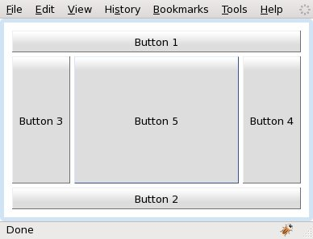
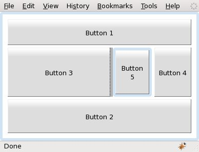
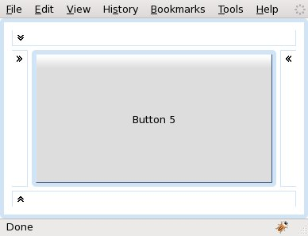

com.google.gwt.user.client.ui.LayoutManagerHelper
org.gwt.mosaic.ui.client.layout.BaseLayout
org.gwt.mosaic.ui.client.layout.BorderLayout
com.google.gwt.user.client.ui.LayoutManagerHelper
org.gwt.mosaic.ui.client.layout.BaseLayout
org.gwt.mosaic.ui.client.layout.BorderLayout
|
||||||||||
| PREV CLASS NEXT CLASS | FRAMES NO FRAMES | |||||||||
| SUMMARY: NESTED | FIELD | CONSTR | METHOD | DETAIL: FIELD | CONSTR | METHOD | |||||||||
java.lang.Object
public class BorderLayout
A border layout lays out a LayoutPanel, arranging and resizing its
widgets to fit in five regions: BorderLayout.Region.NORTH, BorderLayout.Region.SOUTH,
BorderLayout.Region.EAST, BorderLayout.Region.WEST, and BorderLayout.Region.CENTER. Each
region will render the first visible widget added to that region. The region
of the widget added to a LayoutPanel with a BorderLayout can
be specified by setting a BorderLayoutData object into the widget
using LayoutPanel.add(Widget, LayoutData), for example:
LayoutPanel panel = new LayoutPanel(new BorderLayout());
panel.add(new Button("Button 1"), new BorderLayoutData(BorderLayoutRegion.SOUTH));
As a convenience, BorderLayout interprets the absence of a
BorderLayout.Region specification the same as the BorderLayout.Region.CENTER:
LayoutPanel panel = new LayoutPanel(new BorderLayout());
panel.add(new Button("Button 1"), new BorderLayoutData(true));
or
LayoutPanel panel = new LayoutPanel(new BorderLayout());
panel.add(new Button("Button 1"));
The components are laid out according to their preferred sizes or the width
and height specified by a BorderLayoutData object. The
BorderLayout.Region.NORTH and BorderLayout.Region.SOUTH child widgets are stretched
horizontally; the BorderLayout.Region.EAST and BorderLayout.Region.WEST child widgets
are stretched vertically; the BorderLayout.Region.CENTER child widget will be
stretched both horizontally and vertically to fill any space left over.
Here is an example of five buttons laid out using the BorderLayout
layout manager. The LayoutPanel is added decorated to a
Viewport so that it fills all browser's content area:
|  |
public void onModuleLoad() {
Viewport viewport = new Viewport();
LayoutPanel panel = new LayoutPanel(new BorderLayout());
panel.setPadding(10);
panel.setWidgetSpacing(5);
panel.add(new Button("Button 1"), new BorderLayoutData(Region.NORTH));
panel.add(new Button("Button 2"), new BorderLayoutData(Region.SOUTH));
panel.add(new Button("Button 3"), new BorderLayoutData(Region.WEST));
panel.add(new Button("Button 4"), new BorderLayoutData(Region.EAST));
panel.add(new Button("Button 5"));
viewport.add(panel, true);
RootPanel.get().add(viewport);
}
|
In the next example the height of Button 1 is set to 50 pixels,
the height of Button 2 is a ratio (30% of the height of
LayoutPanel's client area except paddings), the width of
Button 3 is set to 200 pixels but may be changed by the user, by
dragging a split bar, to a value in the range [10, 300], and the width of
Button 4 is set to -1 which means the calculated preferred width
for that child. Button 5 is placed in a
com.google.gwt.user.client.ui.DecoratorPanel.
|  |
public void onModuleLoad() {
Viewport viewport = new Viewport();
LayoutPanel panel = new LayoutPanel(new BorderLayout());
panel.setPadding(10);
panel.setWidgetSpacing(5);
panel.add(new Button("Button 1"), new BorderLayoutData(Region.NORTH, 50));
panel.add(new Button("Button 2"), new BorderLayoutData(Region.SOUTH, 0.3));
panel.add(new Button("Button 3"), new BorderLayoutData(Region.WEST, 200, 10, 300));
panel.add(new Button("Button 4"), new BorderLayoutData(Region.EAST, -1));
panel.add(new Button("Button 5"), new BorderLayoutData(true));
viewport.add(panel, true);
RootPanel.get().add(viewport);
}
|
In the next example the regions BorderLayout.Region.NORTH, BorderLayout.Region.SOUTH,
BorderLayout.Region.EAST and BorderLayout.Region.WEST are set to a collapsed state:
|  |
public void onModuleLoad() {
Viewport viewport = new Viewport();
final LayoutPanel panel = new LayoutPanel(new BorderLayout());
panel.setPadding(10);
panel.setWidgetSpacing(5);
ClickListener clickListener = new ClickListener() {
public void onClick(Widget sender) {
panel.setCollapsed(sender, !panel.isCollapsed(sender));
panel.layout();
}
};
Button button1 = new Button("Button 1", clickListener);
Button button2 = new Button("Button 2", clickListener);
Button button3 = new Button("Button 3", clickListener);
Button button4 = new Button("Button 4", clickListener);
panel.add(button1, new BorderLayoutData(Region.NORTH));
panel.add(button2, new BorderLayoutData(Region.SOUTH));
panel.add(button3, new BorderLayoutData(Region.WEST));
panel.add(button4, new BorderLayoutData(Region.EAST));
panel.add(new Button("Button 5"), new BorderLayoutData(true));
panel.setCollapsed(button1, true);
panel.setCollapsed(button2, true);
panel.setCollapsed(button3, true);
panel.setCollapsed(button4, true);
viewport.add(panel, true);
RootPanel.get().add(viewport);
}
|
BorderLayoutData| Nested Class Summary | |
|---|---|
static class |
BorderLayout.Region
|
| Constructor Summary | |
|---|---|
BorderLayout()
|
|
| Method Summary | |
|---|---|
int[] |
getPreferredSize(LayoutPanel layoutPanel)
Computes and returns the size of the LayoutPanel according to this
layout. |
protected boolean |
isCollapsed(LayoutPanel layoutPanel,
com.google.gwt.user.client.ui.Widget widget)
|
void |
layoutPanel(LayoutPanel layoutPanel)
Lays out the specified LayoutPanel according to this layout. |
boolean |
runTwice()
Indicates whether LayoutManager.layoutPanel(LayoutPanel) has to run twice. |
protected void |
setCollapsed(LayoutPanel layoutPanel,
com.google.gwt.user.client.ui.Widget widget,
boolean collapse)
|
| Methods inherited from class org.gwt.mosaic.ui.client.layout.BaseLayout |
|---|
getFlowHeight, getFlowWidth, getLayoutData, setBounds, setLayoutData, setSize, setXY |
| Methods inherited from class com.google.gwt.user.client.ui.LayoutManagerHelper |
|---|
_getLayoutData, _setLayoutData |
| Methods inherited from class java.lang.Object |
|---|
clone, equals, finalize, getClass, hashCode, notify, notifyAll, toString, wait, wait, wait |
| Constructor Detail |
|---|
public BorderLayout()
| Method Detail |
|---|
public boolean runTwice()
BaseLayoutLayoutManager.layoutPanel(LayoutPanel) has to run twice. This
method is called by a LayoutPanel.layout() internally to check if
LayoutManager.layoutPanel(LayoutPanel) should be run again because e.g.: text
wrapping.
The default implementation returns false.
runTwice in interface LayoutManagerrunTwice in class BaseLayouttrue if LayoutManager.layoutPanel(LayoutPanel) has to run twice,
false otherwise.LayoutManager.runTwice()public int[] getPreferredSize(LayoutPanel layoutPanel)
LayoutManagerLayoutPanel according to this
layout.
This method computes the preferred size that the client area of the
LayoutPanel must be in order to position all children at their
preferred size inside the panel according to the layout algorithm encoded
by this layout.
TODO: caching of child preferred sizes
layoutPanel - a LayoutPanel widget using this layout.
{width, height}) containing the computed size.
protected boolean isCollapsed(LayoutPanel layoutPanel,
com.google.gwt.user.client.ui.Widget widget)
public void layoutPanel(LayoutPanel layoutPanel)
LayoutManagerLayoutPanel according to this layout.
This method positions and sizes the children of a LayoutPanel using
the layout algorithm encoded by this layout. Child widgets of the
LayoutPanel are positioned in the client area of the panel. The
position of the LayoutPanel is not altered by this method.
TODO: caching of child preferred sizes
layoutPanel - the LayoutPanel to be laid out
protected void setCollapsed(LayoutPanel layoutPanel,
com.google.gwt.user.client.ui.Widget widget,
boolean collapse)
|
||||||||||
| PREV CLASS NEXT CLASS | FRAMES NO FRAMES | |||||||||
| SUMMARY: NESTED | FIELD | CONSTR | METHOD | DETAIL: FIELD | CONSTR | METHOD | |||||||||